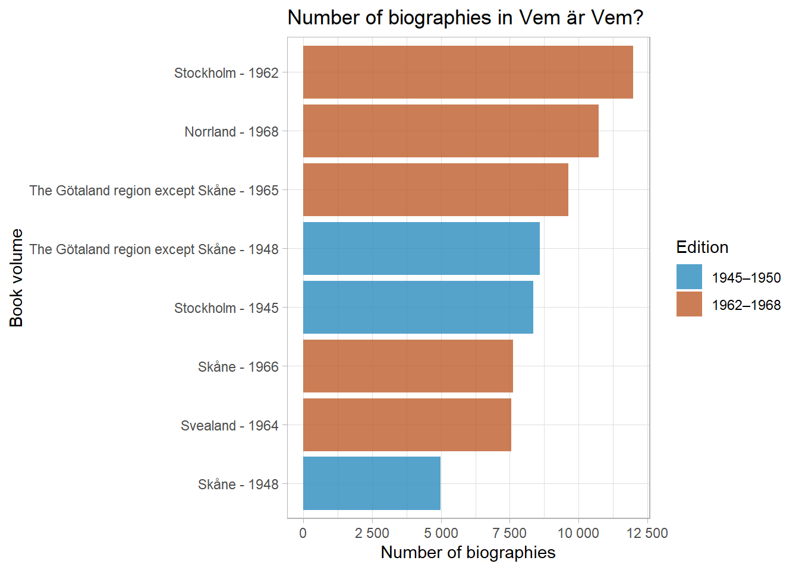
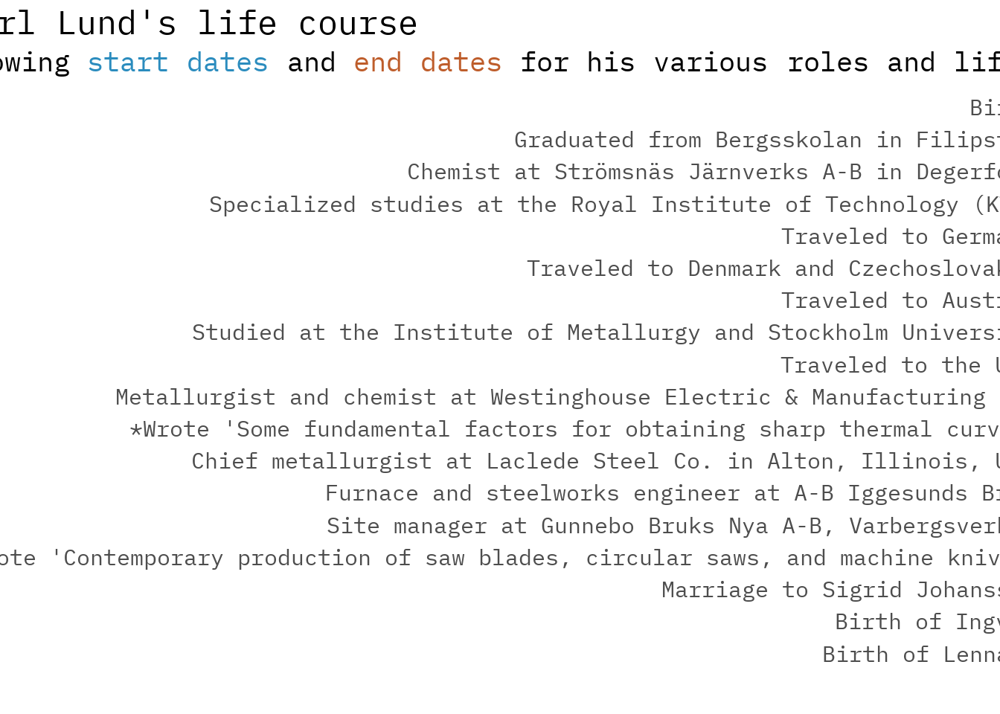

Wired for success WIP
Motivation
Electrification is a cannonical example of a General Purpose Technology (GPT)
When this new technology was adopted in Sweden:
- It made individuals richer 💰🔋
- It lowered inequality 📉🤝
- It allowed structural change on the labor market 🔧💼
What we want to know next:
- Who were the innovators or adopters? 🤔🚀
- Did they move to opportunity? 🏃♀️💼
- How much training did they have in the new technology? 🎓⚡️
Who is who?
Vem är Vem? is a Swedish biographical encyclopedia that was published in two editions of five volumes each in 1945–1950 and 1962–1968 by Bokförlaget Vem är Vem.
The intention was, according to the publishers, to draw attention to people who were at the height of their activities, even if they were younger, in influential or otherwise noted positions in different areas.
Biographies and career trajectories of ~ 69,448 individuals!
8 of the 10 volumes are digitized by librarians in Uppsala – thank you <3

Vem är Vem? Example page

Vem är Vem?
Vem är Vem? Example biography

Vem är Karl Lund?
Lund, Karl Gustaf, chief engineer, Varberg, born on July 22, 1893, in Hille, Gävle County, Sweden, son of factory worker Ferdinand L. and Maria Andersson. Married in 1936 to Sigrid Johansson. Children: Ingvar (born 1938), Lennart (born 1942). — Graduated from Bergsskolan in Filipstad in 1917, specialized studies at the Royal Institute of Technology (KTH) from 1920 to 1922, studied at the Institute of Metallurgy and Stockholm University in 1921-1922. Chemist at Strömsnäs Järnverks A-B in Degerfors from 1918 to 1920, metallurgist and chemist at Westinghouse Electric & Manufacturing Co. in East Pittsburgh, PA, USA, from 1923 to 1926 and 1928 to 1929, chief metallurgist at Laclede Steel Co. in Alton, Illinois, USA, in 1927, furnace and steelworks engineer at A-B Iggesunds Bruk from 1929 to 1931, site manager at Gunnebo Bruks Nya A-B, Varbergsverket, since 1931. Member of the municipal executive committee, deputy chairman of the economic department, deputy member of the board of the power plant, chairman of Varbergs Sparbank, employer representative in the district council of the county labor board, member of the board of Varbergs Luftskyddsförening (Varberg Air Protection Association), secretary of Varbergs Högerförening (Varberg Conservative Association), chairman of the railway sick fund, and Plant Society for Small Bird Friends.
Vem är Karl Lund?
Traveled to Germany in 1921, 1923, 1930, and 1936, Denmark, Czechoslovakia in 1921, 1922, and 1923, Austria in 1921, and the USA from 1923 to 1929. Writings: “Some fundamental factors for obtaining sharp thermal curves” (Transactions of the American Society for Steel Treating, co-authored with C. Benedicks and W. H. Dearden, 1925), “Contemporary production of saw blades, circular saws, and machine knives” (Timber Industry, 1931). Hobbies: hunting and fishing.
Vem är Karl Lund?
Lund, Karl Gustaf, chief engineer, born on July 22, 1893, in Hille, Gävle County, Sweden, son of factory worker Ferdinand L. and Maria Andersson. Married in 1936 to Sigrid Johansson. Children: Ingvar (born 1938), Lennart (born 1942). — Graduated from Bergsskolan in Filipstad in 1917, specialized studies at the Royal Institute of Technology (KTH) from 1920 to 1922, studied at the Institute of Metallurgy and Stockholm University in 1921-1922. Chemist at Strömsnäs Järnverks A-B in Degerfors from 1918 to 1920, metallurgist and chemist at Westinghouse Electric & Manufacturing Co. in East Pittsburgh, PA, USA, from 1923 to 1926 and 1928 to 1929, chief metallurgist at Laclede Steel Co. in Alton, Illinois, USA, in 1927, furnace and steelworks engineer at A-B Iggesunds Bruk from 1929 to 1931, site manager at Gunnebo Bruks Nya A-B, Varbergsverket, since 1931. Member of the municipal executive committee, deputy chairman of the economic department, deputy member of the board of the power plant, chairman of Varbergs Sparbank, employer representative in the district council of the county labor board, member of the board of Varbergs Luftskyddsförening (Varberg Air Protection Association), secretary of Varbergs Högerförening (Varberg Conservative Association), chairman of the railway sick fund, and Plant Society for Small Bird Friends.
Vem är Karl Lund?
Traveled to Germany in 1921, 1923, 1930, and 1936, Denmark, Czechoslovakia in 1921, 1922, and 1923, Austria in 1921, and the USA from 1923 to 1929. Writings: “Some fundamental factors for obtaining sharp thermal curves” (Transactions of the American Society for Steel Treating, co-authored with C. Benedicks and W. H. Dearden, 1925), “Contemporary production of saw blades, circular saws, and machine knives” (Timber Industry, 1931). Hobbies: hunting and fishing.

Data pipeline
| Step | Process | |
|---|---|---|
| 1 | Scrape book data from website | 🌐➡️📚 |
| 2 | Split biographies on each page of a book | 📚➡️📄 |
| 3 | Translate biographies | 📄🔄📄 |
| 4 | Structure biographies using Schema.org | 📄➡️🔗 |
| 5 | Augment data | 🔗🔍🌍🎓📚 |
| 6 | Store data | 🔗📚📂 |
NLP challenges
- Many abbreviations and contractions
- DOB: “f.\s*(\d{2})\/(\d{2})/(\d{2})”
- Gävleborg County: “Gävleb. l.”
- Similar structure for each entry but not exactly the same information in the same order

1. Translate 🤖
Using OpenAI’s GPT-3.5 chat API:
We tell the system “You are an expert in Swedish family history”
Then we ask it to translate the Swedish text to English
def translate_and_structure_text(swedish_text):
try:
# Translate the Swedish text to English
translate_prompt = f"Translate the following abbreviated Swedish biography to English: {swedish_text}"
translation_response = openai.ChatCompletion.create(
model="gpt-3.5-turbo",
messages=[
{"role": "system", "content": "You are an expert on Swedish family history."},
{"role": "user", "content": f"{translate_prompt}"}
]
)2. Structure 🤖

2. Structure 🤖
Using OpenAI’s GPT-3.5 chat API:
We tell the system “You are an expert in Swedish family history and the Schema.org/Person format”
We provide it the original Swedish and English translation, and ask it to structure the biography in Schema.org/Person format as a JSON object
structure_prompt = f"Given the original Swedish biography: {swedish_text}\nAnd its English translation: {english_text}, Structure the biography in Schema.org/Person format as a JSON object. Include dates wherever possible. Only provide a RFC8259 compliant JSON response."
structure_response = openai.ChatCompletion.create(
model="gpt-3.5-turbo",
messages=[
{"role": "system", "content": "You are an expert on Swedish family history and the Schema.org/Person format."},
{"role": "user", "content": f"{structure_prompt}"}
]
)3. Augment 🤖
Using OpenAI’s GPT-4 chat API:
We create python code to geocode any addresses in the biography (in this example), as well as flagging the highest level of education, and extract any mention of patents or inventions in the biography.
def geocode_birthplace(birthplace, geolocator, geocoded_cache):
if isinstance(birthplace, dict):
if "name" in birthplace:
birthplace_name = birthplace["name"]
elif "address" in birthplace and "addressLocality" in birthplace["address"]:
birthplace_name = birthplace["address"]["addressLocality"]
else:
print(f"Invalid birthplace data: {birthplace}")
return None
elif isinstance(birthplace, str):
birthplace_name = birthplace
else:
print(f"Invalid birthplace data: {birthplace}")
return None
if birthplace_name not in geocoded_cache:
try:
location = geolocator.geocode(birthplace_name)
if location:
geocoded_cache[birthplace_name] = {
"latitude": location.latitude,
"longitude": location.longitude
}
time.sleep(1) # Add a 1-second delay between geocoding requests
except Exception as e:
print(f"Error geocoding birthplace {birthplace_name}: {e}")
return geocoded_cache.get(birthplace_name)Output
{
"original": "Lund, Karl Gustaf, överingenjör, Varberg, f. 22/7/93 i Hille, Gävleb. 1., av brukstj :m. Ferdinand L. o. Maria Andersson. G. 36 m. Sigrid Johansson. Barn: Ingvar f. 38, Lennart 42. — Ex. v. bergssk. i Filipstad 17, spec:-stud. v. KTH (B) 20-22, stud. v. me-tallogr. inst. o. Sthlms högsk. 21-22. Kemist v. Strömsnäs Järnverks A-B, Degerfors, 18-20, metallurg o. kemist v. Westinghouse Electric & Manuf. Co., East Pittsburgh, Pa, USA, 23-26 o. 28-29, chefsmetallurg v. Laclede Steel^Co., Ahon, 111., USA, 27, hytt-o. stålv.ing. v. A-B Iggesunds Bruk 29-31, platschef v. Gunnebo Bruks Nya A-B, Varbergsverket, sed. 31. Led. av drätselkamm., v. ordf. v. ekonomi-avd., suppl. i styr. f. elverket, huv:-man i Varbergs Sparbank, arb :giv. repr. i länsarb:ndns kretsråd, led. av styr. f. Varbergs luftsk ifören., sekr. i Varbergs högerfören., ordfs i järnv. sjukkassa o. Plant :sällsk. Småfågl. Vänner. Res. t. Tyskl. 21, 2^ 23, 30 o. 36, Danm., Tjeckoslov. 21, 22, 23, Österr. 21, USA 23-29. Skr.: Some fundamental factors for obtaining sharp thermal curves (Träns. Am. Soc. for Steel Treating, tills. m. C. Benedicks o. W. H. Dearden 25), Nutida fabrikation av sågblad, sågklingor o. maskinknivar (Trävaruind. 31). Hob-bies: jakt o. fiske.",
"translated": "Lund, Karl Gustaf, chief engineer, Varberg, born on July 22, 1893, in Hille, Gävle County, Sweden, son of factory worker Ferdinand L. and Maria Andersson. Married in 1936 to Sigrid Johansson. Children: Ingvar (born 1938), Lennart (born 1942). — Graduated from Bergsskolan in Filipstad in 1917, specialized studies at the Royal Institute of Technology (KTH) from 1920 to 1922, studied at the Institute of Metallurgy and Stockholm University in 1921-1922. Chemist at Strömsnäs Järnverks A-B in Degerfors from 1918 to 1920.",
"structured": {
"@context": "https://schema.org",
"@type": "Person",
"name": "Karl Gustaf Lund",
"birthDate": "1893-07-22",
"birthPlace": {
"name": "Hille, Gävle County, Sweden",
"latitude": 59.916667,
"longitude": 15.0
},
"jobTitle": "Chief Engineer",
"memberOf": {
"@type": "Organization",
"name": "Swedish Technical Association"
},
"children": [
{
"@type": "Person",
"name": "Anita",
"birthDate": "1937"
},
{
"@type": "Person",
"name": "Peter",
"birthDate": "1942"
}
],
"spouse": {
"@type": "Person",
"name": "Marianne Hammarberg",
"marriageDate": "1936"
},
"education": [
{
"@type": "EducationalOccupationalCredential",
"credentialCategory": "Vocational",
"issuer": {
"@type": "Organization",
"name": "Technical Gymnasium in Örebro"
},
"endDate": "1928"
},
{
"@type": "EducationalOccupationalCredential",
"credentialCategory": "Degree",
"issuer": {
"@type": "Organization",
"name": "KTH"
},
"endDate": "1934"
}
],
"worksFor": {
"@type": "Organization",
"name": "Telegraph station in Norrköping",
"startDate": "1946"
},
"hasOccupation": [
{
"@type": "Occupation",
"name": "Engineering assistant",
"employer": {
"@type": "Organization",
"name": "Telegraph station in Nässjö"
},
"startDate": "1935",
"endDate": "1935"
},
{
"@type": "Occupation",
"name": "Line engineer",
"employer": {
"@type": "Organization",
"name": "Telegraph station in Norrköping"
},
"startDate": "1946"
}
]
}
}Output
